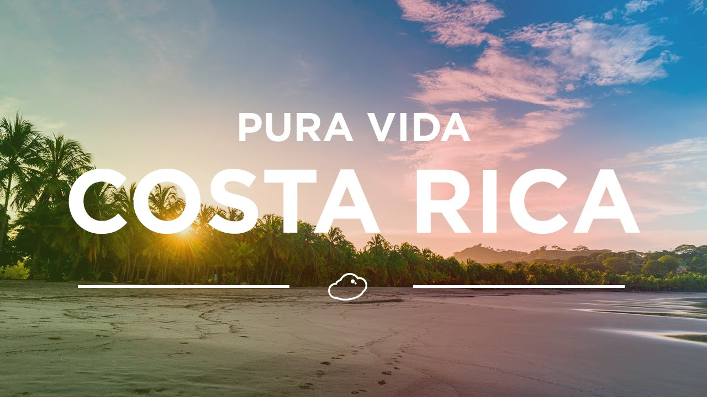

Marketing del fútbol
Se entorna en otorgar oportunidades de negocio. Ayuda también a movilizar gran parte del dinero en el mundo.
- Marketing del deporte general
Se apoya en la misión de mensajes colectivos que suelen referirse a los beneficios que brinda la práctica de un deporte, de igual manera va en conjunto con la difusión de las buenas costumbres alimentarias.
- Marketing de entidades deportivas
Son los equipos del marketing de los deportistas en general los que pueden ir a cualquier gimnasio y registrarse, se encargan en la promoción de sus actividades y que el público pueda conocer más acerca de ellos.
- Marketing de eventos deportivos
Este es uno de los pilares fundamentales del marketing deportivo, ya que cumple un objetivo doble, por una parte, comunicar y proporcionar el evento deportivo y por otro, dar visibilidad a los patrocinadores y que obtengan un retorno por formar parte del mismo.
- Marketing de productos o servicios deportivos
Consiste en impulsar la venta de otros productos por medio de un deporte. De esta forma, estos productos o servicios son asociados a los valores propios de un deporte o de un deportista.
El origen del nombre de Costa Rica
Una de las hipótesis del nombre de Costa Rica, es que al llegar Cristóbal Colon al país, el 25 de septiembre de 1502, el cual sería su cuarto viaje a América, quedó impresionado por la abundancia de oro en sus habitantes, llamando a la región, Costa Rica.
Energía renobable
El país ha logrado que el 99% de su energía, provenga de fuentes renovables. El 80% en energía hidroeléctrica. De hecho, la presa hidroeléctrica Reventazón, es la más grande de centro América.
Sede de paz de la ONU
Hoy en día, Costa Rica, es la sede de la universidad de la paz de la ONU, de la corte interamericana de derechos humanos, el instituto interamericano de cooperación para la agricultura y el consejo monetario centro americano.
"Costa Rica de pura vida"
Costa Rica, reconocido internacionalmente por ser el país de la pura vida. Una frase que dice constantemente y que utilizan para todo, ya sea para saludar, para decir que están bien, para hablar de la calidad de alguien como persona, como para despedirse e incluso para agradecer.
Un país pacifico
Después de la guerra civil, su constitución terminó por disolver a su ejército, aunque sea para no estar indefensos, poseen la policía administrativa, denominada, fuerza pública de Costa Rica. Fuera y dentro de la fuerza pública, hay varias unidades de fuerzas especiales con entrenamiento militar de otras naciones, como la unidad especial de apoyo, los grupos de apoyo operacional, la unidad de intervención policial.